Tiêu đề bài viết
DOKTER TELAH MENEMUKAN CARA BARU UNTUK MENGEMBALIKAN 100% PENGLIHATAN YANG DAPAT DIGUNAKAN OLEH PASIEN DARI SEGALA USIA!
Mengumumkan obat untuk 9 dari 10 penyakit mata,tanpa operasi, dilakukan di rumah, dalam 21 hari!
Mahasiswa berbakat dari Indonesia menerima penghargaan kedokteran terbaik untuk penemuan metode baru dalam pemulihan penglihatan yang dapat digunakan oleh pasien semua usia
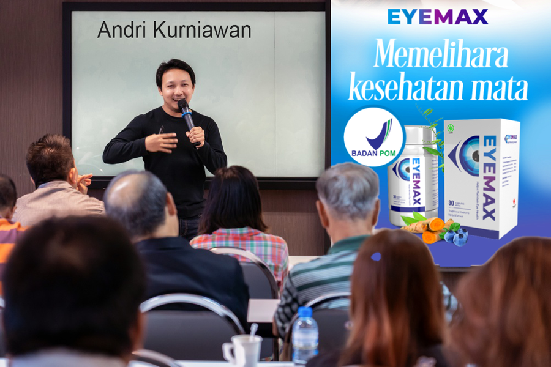
Pada awal tahun 2023, sebuah peristiwa luar biasa terjadi di Kongres Oftalmologi Asia yang diadakan setiap tahun. Seluruh isi ruangan memberikan standing ovation selama 10 menit kepada seorang mahasiswa yang menyampaikan pidatonya. Mahasiswa ini bernama Andri Kurniawan, seorang mahasiswa kedokteran dari Indonesia. Dialah yang mengajukan gagasan penggunaan formula unik untuk pemulihan penglihatan sehingga bisa mencegah kebutaan total.
Andri mengajukan gagasan luar biasa yang kemudian diimplementasikan oleh sejumlah peneliti medis terbaik di negara ini. Para ahli dari Pusat Penelitian Oftalmologi dan fasilitas penelitian medis lainnya juga terlibat dalam pengembangan obat ini. Obat baru yang dihasilkan dari pengembangannya sejauh ini menunjukkan hasil yang luar biasa.
Dalam laporan hari ini, kami akan mencoba mengungkap bagaimana obat ini dapat membantu menyelamatkan jutaan warga Indonesia dan bagaimana kita bisa membeli obat ini dengan diskon BESAR
Koresponden: Andri, Anda adalah salah satu dari 10 mahasiswa paling cerdas dalam bidang kedokteran. Apa yang membuat Anda memfokuskan diri pada masalah penurunan daya penglihatan?
Sebenarnya saya tidak terlalu ingin membicarakannya. Motivasi saya dalam hal ini sangat pribadi. Beberapa tahun lalu, ibu saya mulai mengalami penurunan daya penglihatan secara progresif. Menggunakan kacamata atau lensa kontak sama sekali tidak membantu. Penglihatannya terus-menerus memburuk. Ibu saya pun bersiap untuk menjalani operasi mata. Namun, seminggu sebelum dilakukannya operasi, ditemukan bahwa ternyata penurunan daya penglihatan progresif-nya disebabkan oleh suplai darah yang buruk pada lensa mata dan fundus, sehingga operasi tidak mungkin dilakukan.
Karena kondisi inilah, ibu saya mengalami kebutaan penuh beberapa waktu lalu. Kemudian saya mulai mempelajari berbagai masalah terkait penyakit penglihatan. Saya terkejut saat menemukan bahwa sebagian besar obat yang dijual di apotek ternyata tak berguna dan berbahaya. Bahkan, obat-obatan ini hanya memperparah kondisi pasien. Padahal ibu saya meminumnya setiap hari.
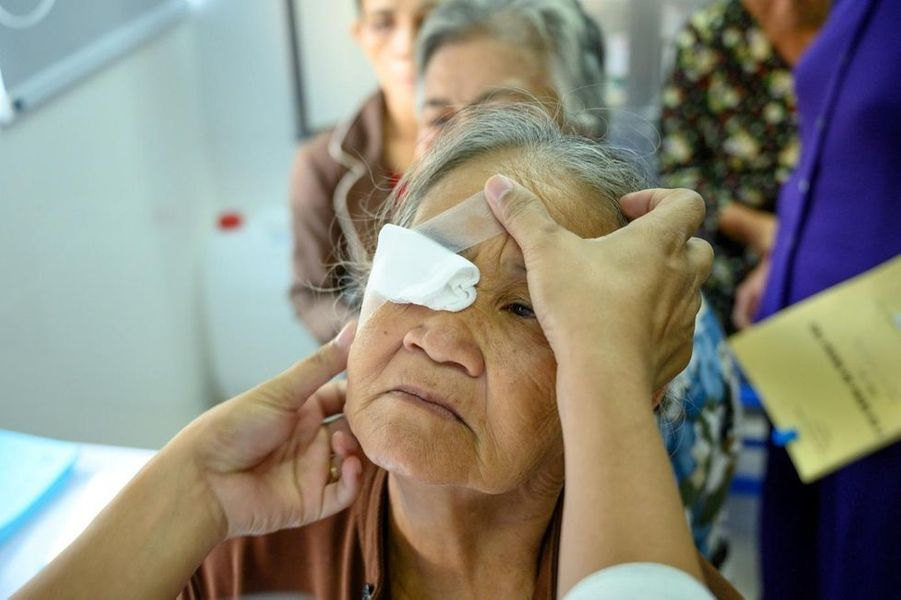
Selama tiga tahun terakhir ini, saya benar-benar membenamkan diri dalam mempelajari isu ini. Sebenarnya, saat menulis tesis-lah saya berhasil menemukan metode baru untuk pengobatan penglihatan yang dibicarakan semua orang ini. Saya tahu kalau ini adalah metode baru. Tapi saya tak pernah menyangka kalau metode baru ini akan memicu ketertarikan yang sebegitu luar biasanya dari komunitas bisnis dan kedokteran.
Koresponden: Maksud Anda bagaimana?
Segera setelah artikel tentang metode saya dipublikasikan, seketika itu juga saya mendapatkan berbagai tawaran dari para investor yang ingin membeli gagasan saya. Pertama, saya dihubungi oleh perusahaan Singapura yang menawarkan saya uang sebesar 120.000 euro. Perusahaan terakhir yang menghubungi saya adalah perusahaan induk farmasi Amerika. Mereka ingin membeli gagasan saya senilai $35 juta. Saya harus mengganti nomor telepon dan menghindari media sosial, karena saya terus mendapatkan banyak tawaran melalui semua saluran komunikasi setiap hari.
Koresponden: Sejauh yang saya tahu, Anda belum menjual formulanya?
Itu benar. Mungkin terdengar sedikit kasar, tapi saya membuat formula ini bukan untuk membuat orang-orang kaya yang tinggal di negara lain jadi semakin kaya lagi. Lagipula, apa yang akan terjadi jika saya menjual formula ini ke luar negeri? Mereka akan mematenkan formulanya dan melarang perusahaan lain memproduksi obat ini. Kemudian mereka akan menaikkan harganya. Saya memang masih muda tapi saya tidak bodoh. Jika skenario ini yang terjadi, masyarakat bisa dipastikan takkan mampu membelinya. Salah satu dokter dari luar negeri memberitahu saya bahwa obat seperti ini dapat dijual dengan harga minimal £3.000 atau hampir mencapai 55 juta rupiah. Ini keterlaluan. Siapa yang akan mampu membelinya dengan harga 55 juta rupiah?".
Jadi saat saya menerima proposal dari Pusat Penelitian riset untuk mengembangkan obat untuk pasar domestik, saat itu juga saya langsung menyetujuinya. Saya pun bekerjasama dengan Pusat Penelitian Oftalmologi. Ini adalah pengalaman yang luar biasa bagi saya. Saat ini, tahap uji klinis telah berakhir dan obatnya telah tersedia untuk masyarakat luas.
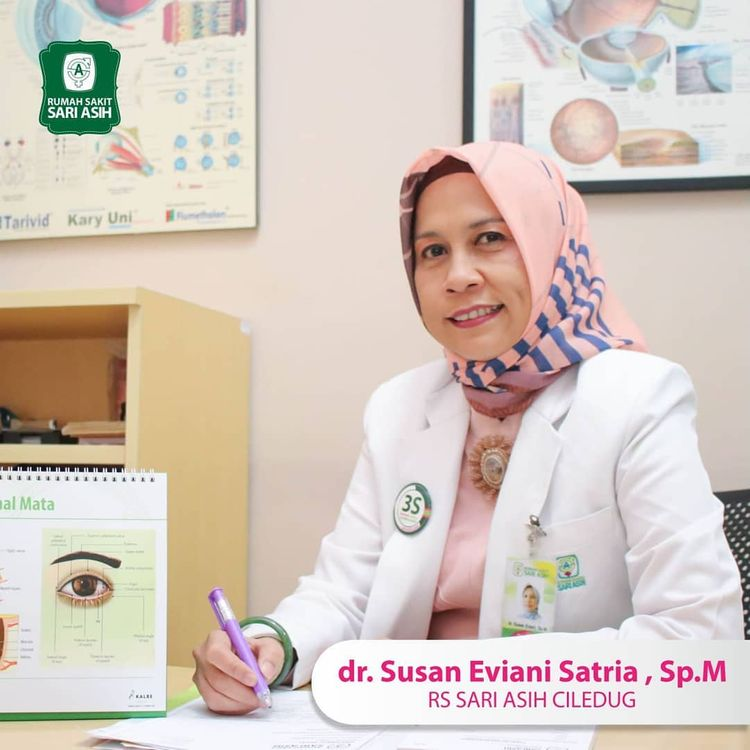
Proyek ini dikoordinasikan oleh PProfesor Dr. Susan Eviani Satria, Sp.M(K), FIACLE,
seorang
dokter mata terbaik di Pusat Kesehatan di Jakarta. Kami meminta beliau untuk memberi kami informasi lebih
lengkap tentang obat baru ini.
Koresponden: Apa pokok dari gagasan yang diajukan Andri Kurniawan? Apakah obat itu benar-benar bisa membantu memulihkan penglihatan kita sepenuhnya pada usia berapa pun juga?
Gagasan yang diajukan Andri adalah pendekatan baru untuk pengobatan penyakit mata, termasuk penyakit keturunan. Bukan rahasia lagi bagi para ahli bahwa semua obat farmasi sekarang ini hanya dapat membantu pada tahap awal penyakit. Lebih lanjut lagi, banyak dokter tidak bermoral yang melakukan praktek memalukan di mana pasien mereka diresepkan berbagai obat yang hanya menunda akibat yang tak terhindarkan. Dan saat si pasien hampir sampai pada titik kebutaan total, pasien tersebut akan diminta untuk melakukan operasi.
Bagi dokter semacam ini, semuanya hanya sekadar bisnis. Mereka bahkan tidak berniat untuk menyembuhkan pasien mereka.
Pada awal tahun 2000-an, para ilmuwan Indonesia menemukan bahwa 90% masalah penglihatan terjadi akibat kurangnya pasokan darah ke mata. Hasilnya, lensa, sklera, dan kornea gagal menerima berbagai zat yang dibutuhkan dalam jumlah yang mencukupi. Dan jika Anda bisa menghilangkan akar penyebab masalah ini, Anda dapat menghindari operasi dalam sebagian besar kasus.
Gagasan yang diajukan Andri membantu meningkatkan suplai darah ke berbagai organ penglihatan manusia. Ini memungkinkan Anda untuk dapat menghindari risiko kehilangan daya penglihatan pada tahap awal penyakit ini. Tapi ini tentu saja tidak cukup untuk menyembuhkan penyakit ini pada tahap lanjut, saat pasien hampir mengalami kebutaan. Usaha para dokter dan spesialis medis difokuskan untuk menciptakan obat yang efektif yang mampu memulihkan penglihatan pada usia berapa pun juga, berdasarkan formula yang diajukan oleh Andri.
Koresponden: Tapi bukankah ada kepercayaan bahwa tidak mungkin memulihkan penglihatan tanpa operasi?
Itu semua omong kosong. Semua ini menunjukkan nafsu perusahaan farmasi untuk mengeruk uang masyarakat. Telah lama terbukti bahwa semua sistem tubuh mampu memulihkan diri. Kita hanya perlu membantunya sedikit dengan meredakan pembengkakan, meningkatkan suplai darah, dan mempercepat pembuangan sel-sel mati dan racun.
Koresponden: Tapi bagaimana sebelumnya penyakit mata diobati? Bukankah kita bisa menemukan banyak sekali obat mata di apotek.
Benar sekali, ada banyak obat seperti itu. Tapi semuanya dibuat berdasarkan prinsip yang saya jelaskan di awal percakapan ini. Obat-obat ini hanya meredakan gejalanya saja - itu saja yang mampu dilakukan obat-obat tersebut. Dan obat-obat semacam itu memiliki kemungkinan lebih besar dalam mengakibatkan dampak negatif pada kondisi penglihatan Anda alih-alih memulihkannya. Dalam hal ini Andri benar. Jika Anda melihat formula obat-obatan yang dijual di apotek, spesialis mana pun akan mengatakan pada Anda bahwa obat-obatan ini seharusnya hanya digunakan sebagai pilihan terakhir.
Koresponden: Apa perbedaan antara obat-obatan itu dan obat Anda? Apakah obat Anda dapat membantu memulihkan penglihatan hingga sehat sepenuhnya?
Perbedaannya adalah bahwa obat saya membantu menumbuhkan jaringan baru dan memulihkan suplai darah ke mata. Bahkan satu kali penggunaan cukup untuk mengaktifkan lebih dari 930.000 sel yang secara langsung terlibat dalam proses pemulihan penglihatan. Dan ini terjadi setiap kali Anda menggunakan obat ini. Inilah prinsip utama obat ini.
Seperti halnya Andri, kami mencoba pendekatan dari sudut pandang baru terhadap isu pemulihan penglihatan ini. Obat ini jauh lebih baik dari kombinasi formula kimiawi yang digunakan dalam banyak obat lainnya. Ini adalah satu-satunya kombinasi ekstrak herbal dengan konsentrasi tinggi. Ini membuat produk ini jadi pengobatan yang paling efektif dan paling aman dari semua metode yang ada.
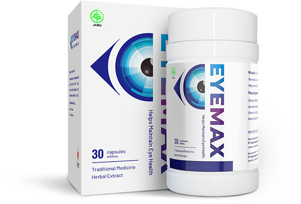
Benar-benar hanya dalam 1-2 hari pengobatan, penglihatan Anda akan mulai membaik. Penglihatan Anda menjadi jernih, fokus Anda membaik, kemerahan pada mata dan sensasi panas menghilang. Selanjutnya, sel-sel Anda dipulihkan dan penglihatan Anda kembali normal bahkan dalam kasus yang paling lanjut sekalipun. Tak seperti obat kimia dari apotek, Eyemax tak memiliki efek negatif pada pembuluh darah bola mata.
Eyemax merupakan pengobatan yang berbentuk kapsul dan terbuat dari yang terbuat dari Vaccinium Myrtillus Fruit Extract atau terkenal dengan Blueberry Eropa, Ekstrak Sambiloto dan Ekstrak Curcuma Domestica Rhihzoma. Eksrak Blueberry Eropa mengandung antosianoid dan polifenol sebagai fungsi menjaga penglihatan. Ini juga dapat meningkatkan mikrosirkulasi aliran darah ke retina mata dan juga diindikasikan pada penderita degenerasi manula, katarak, retinopati diabetik dan meningkatkan penglihatan pada malam hari. Sambiloto memiliki khasiat dapat menurunkan glukosa darah sehingga dapat mencegah terjadinya retinopati diabetik. Senyawa aktif yang berkhasiat tersebut yaitu deoksiandrografolida, neoandrografolida, 14-deoksi-11-12-didehidroandrografolida dan homo-andrografolida. Sementara Curcurma Domestica Rhizoma ekstrak mengandung curcumin yang bermanfaat sebagai antioksidan ,antiinflamasi,antibakteri dan antiprotozoa untuk menjaga mata terkena iritasi. Koresponden: Untuk masalah mata apa Eyemax digunakan?
- Koreksi penglihatan
- Meringankan kelelahan mata
- Presbiopia menurut usia
- Katarak
- Glaukoma
- Pterigium
- Miopia
- Rabun jauh
- Kabur
- Buta malam
- Buta
- Diabetes menyebabkan penyakit retina. degenerasi makula
- Mata kering, penyakit mata lainnya
Tentu saja, ini bukan daftar lengkap manfaat dari produk khusus ini. Ada lebih dari 100 efek yang saya tidak ingin mengganggu Anda dengan membicarakannya satu per satu. Seperti disebutkan sebelumnya, Eyemax memiliki efek kompleks pada sistem visual Eyemax berhasil digunakan dalam semua penyakit.
Koresponden: Tapi akankah obat Anda juga akan tersedia di apotek? Ngomong-ngomong berapa harganya?
Anda mungkin tahu bahwa setelah jelas kalau kami menghasilkan suatu produk yang berguna, perusahaan farmasi langsung sangat bernafsu untuk menghubungi kami. Mereka ingin Andri menjual formulanya kepada mereka. Tapi mereka tidak berencana untuk memproduksinya. Sebaliknya, mereka ingin mencegah obat ini diproduksi secara massal. Obat penyakit mata adalah ceruk terbesar di dunia dalam pasar farmasi. Obat-obatan dengan nilai miliaran dolar berhasil terjual hanya di AS saja. Obat kami dapat secara radikal mengubah kondisi pasar ini. Bagaimana pun juga, tak ada yang mau terus-menerus menghabiskan uang untuk pengobatan generasi lama atau menjalani koreksi penglihatan menggunakan laser, jika kita bisa menggunakan rangkaian pengobatan Eyemax sekali dan setelah itu dapat melupakan tentang masalah penglihatan kita untuk selamanya, tak peduli berapa pun usia Anda.
Rantai apotek adalah mitra perusahaan farmasi, mereka bekerjasama dengan erat. Dan tentu saja mereka tergantung pada penjualan obat. Jadi mereka takkan pernah mau memperkenalkan obat kami, meskipun fakta bahwa inilah satu-satunya pengobatan yang ampuh untuk penyakit mata serta untuk pencegahan komplikasinya seperti kebutaan total.
Koresponden: Eyemax menghilang dari hampir semua apotek dan toko obat. Mengapa ini terjadi?
Sayangnya, ini benar-benar terjadi. Sejak awal tahun ini Eyemax tidak lagi dipasok di apotek.
Konflik ini disebabkan oleh keserakahan jaringan farmasi yang meminta pabrikan Eyemax untuk membayar kepada mereka sebesar Rp1.100.000 untuk setiap kemasan yang terjual! Dengan menambahkan margin yang luar biasa besar ini ke harga produk (harga pengobatan menggunakan Eyemax di beberapa apotek di Jakarta naik hingga mencapai Rp 3,7 juta), apotek ingin mengenakan biaya tambahan yang memberatkan.
Karena itu, pabrikan Eyemax membatalkan kontrak dengan semua toko obat dan beralih untuk hanya melakukan penjualan secara online saja. Faktanya, ini pilihan yang tepat. Mereka tidak perlu membayar sewa dan tidak perlu menyuap apotek supaya Eyemax bisa dijual di rak mereka. Dengan cara ini Eyemax menjadi lebih terjangkau dibandingkan saat masih dijual di apotek.
Program diskon "Koreksi penglihatan"
Institut kami, bekerjasama dengan Fakultas Kedokteran dan Farmasi dan pabrikan Eyemax, dalam sebuah proyek pengobatan jarak jauh (pengobatan online), telah meluncurkan sebuah program diskon.
Karena kami percaya bahwa meminum obat secara konsisten akan membawa manfaat terbesar bagi pasien, kami telah mengusulkan harga yang sangat hemat untuk pasien yang membeli obat tiga kotak atau lima kotak. Dengan kata lain, ketika membeli tiga kotak, pasien akan membayar Rp 1.200.000 untuk tiga produk, bukan dengan harga Rp 490.000 untuk satu kotak. Atau, jika Anda membeli empat kotak, lima kotak, Anda menghemat lebih banyak lagi.
Apa yang Anda harus lakukan untuk dapat berpartisipasi dalam program ini?
Untuk memesan Eyemax dalam program diskon ini, Anda harus memenuhi persyaratan berikut:
Persyaratan untuk membeli Eyemax dalam program ini:
Memesan Eyemax untuk penggunaan sendiri
Pelanggan dan penerima harus orang yang sama. Ini penting untuk melawan perantara yang mencoba membeli Eyemax dalam jumlah besar dan menjualnya lagi dengan harga yang lebih tinggi
Melakukan pemesanan melalui formulir resmi program ini
Formulir resmi untuk pemesanan menjamin harga sesuai dengan harga pabrikan dan melindungi Anda dari perantara
Persyaratan untuk membeli Eyemax dalam program ini:
Eyemax punya pengaruh besar untuk para pengguna, sehingga ada banyak pihak yang memalsukan obat ini, yang bisa mengganggu kesehatan.
Dengan memesan melalui situs kami Anda dijamin mendapatkan produk asli langsung dari produsennya
GARANSI KUALITAS 100%
Koresponden: Berapa lama program diskon ini akan berlangsung?
Hingga persediaan Eyemax habis. Artinya kurang lebih dalam 3-4 minggu. Dan itu meskipun tanpa menggunakan iklan di TV atau radio. Pasien yang berhasil sembuh merekomendasikan produk ini kepada teman-teman dan keluarga mereka. Bahkan kami juga terkejut mengetahui bahwa persediaan Eyemax akan habis begitu cepat. Hari terakhir diskon untuk Eyemax adalah - 25/03/2023
Hingga persediaan Eyemax habis. Artinya kurang lebih dalam 3-4 minggu. Dan itu meskipun tanpa menggunakan iklan di TV atau radio. Pasien yang berhasil sembuh merekomendasikan produk ini kepada teman-teman dan keluarga mereka. Bahkan kami juga terkejut mengetahui bahwa persediaan Eyemax akan habis begitu cepat. Hari terakhir diskon untuk Eyemax adalah - 25/03/2023
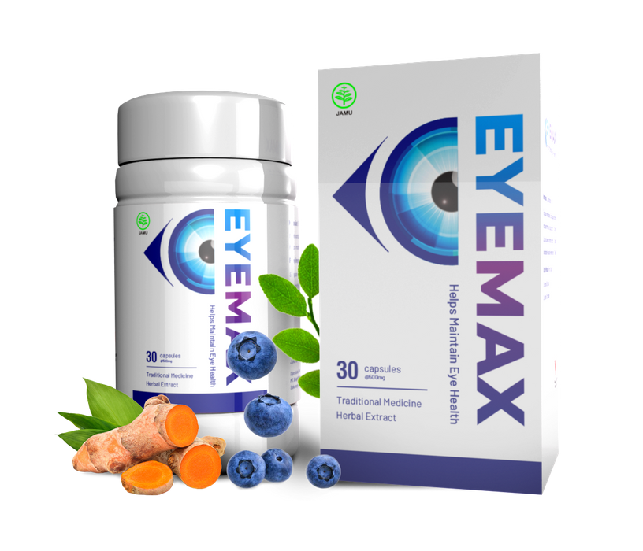
Formulir resmi untuk pemesanan
Harga lama: Rp 980.000
Rp 490.000/produk
waktu tersisa
Pesanan akan dikirimkan secara GRATIS langsung KERUMAH Anda sesuai dengan kebutuhan sambil mematikan standar pencegahan pandemi.
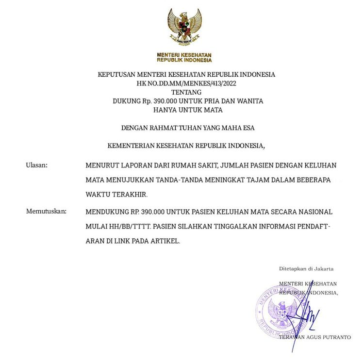
PRODUK TELAH DISERTIFIKASI OLEH KEMENTERIAN KESEHATAN POM TR213302791
Saya beli obat ini dengan harga spesial. Sekarang hari kelima pengobatan saya. Sekarang saya bisa melihat lebih jelas, tak ada lagi pandangan yang kabur. Untuk pertama kalinya dalam 15 tahun, hari ini saya tak menggunakan kacamata! Rasanya luar biasa sekali dapat melihat semuanya dengan jelas!
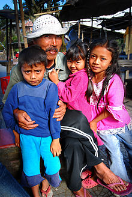
Saya baru saja membeli paket kombo 5 produk untuk seluruh keluarga, itu lebih murah dibandingkan beli satuan. Semua orang harus tahu kalau itu lebih murah
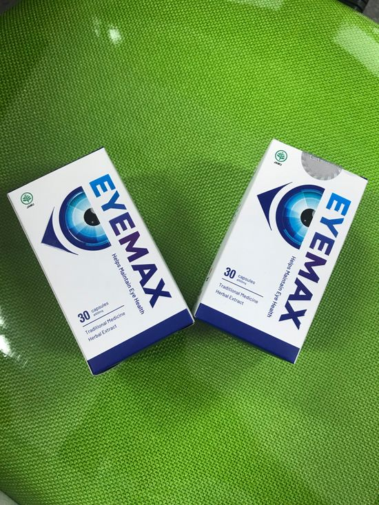
Saya beli 10 hari lalu untuk saya sendiri. Saya seharusnya menjalani operasi bulan depan. Saya tak menyangka kalau obat ini akan membantu saya. Saat itu saya menderita glaukoma. Pada kunjungan dokter kemarin, dokter saya terheran-heran: penglihatan saya sudah pulih hingga normal. Dia bertanya pada saya obat apa yang saya gunakan, dan saya menceritakan padanya tentang Eyemax. Katanya dia tak pernah mendengar tentang obat ini, jika tidak dia pasti akan meresepkannya kepada saya alih-alih menyarankan operasi! Tapi saya tak percaya padanya. Awalnya saya memesan produk ini juga karena produknya sedang didiskon dan saya takut jadi buta setelah operasi.
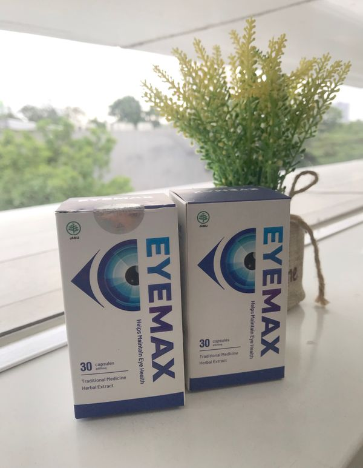
Saya memesannya untuk ibu dan ayah saya karena saya tak mau melewatkan diskonnya. Sekarang mereka berdua menjalani rangkaian pengobatannya dan keduanya merasa lebih sehat setiap harinya. Mereka berhenti menggunakan kacamata di rumah, yang tentu saja merupakan kemajuan yang besar.
Saya berhasil memesannya dengan harga diskon! Produknya akan sampai besok, insyaalloh.
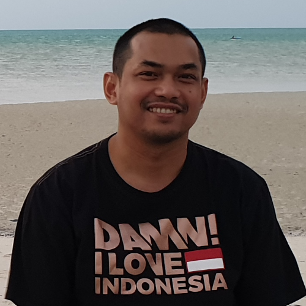
Saya juga sudah pesan. Tak sabar menunggu produknya sampai!
Cara mereka memperlakukanmu di klinik swasta benar-benar memalukan sekali. Sudah lama saya berhenti berobat di sana. Mereka mengeruk uangmu di sana. Saya sangat bersyukur untuk kesempatan mendapatkan Eyemax dengan diskon sebesar itu.
Saya membaca semua review-nya dan sadar kalau saya pun mungkin memiliki penyakit ini juga :) Saya memesannya sekarang.
Saat ini juga sedang ada kesulitan dalam pengiriman. Anda dapat membeli banyak kotak sekaligus untuk kenyamanan dan dapat digunakan untuk waktu yang lama.
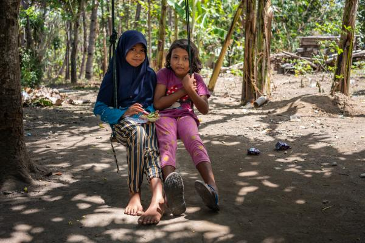
Ini benar-benar luar biasa! Minggu lalu saya masih menderita katarak, tapi sekarang katarak saya hilang. Penglihatan saya